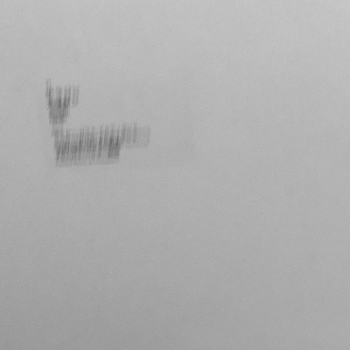

Aria (rethink) / Aria (for long time)

This album includes "Aria (rethink)" written for the Born Creative Festival at the Tokyo Metropolitan Theatre in 2022, plus the previously unreleased "Aria (for a long time)."
楽曲の素材にバッハ《ゴルトベルク変奏曲》(BWV. 988) より冒頭2小節、6拍のみを用いた。この6拍を解体・再構築するなかで、オリジナルの質感を残しつつ、滞留的・無時間的な作品に仕上げることを試みた。《ゴルトベルク変奏曲》は空間的なあり方としてマテリアライズされ、そこにバッハのもつ記号性を発現させる。こうした有時間的キャラクターを空間的キャラクターへと再構築する過程をもって「再考 (rethink)」とした。
I used only the first six beats of Bach's "Goldberg Variations" (BWV. 988) as the material for this piece. In deconstructing and reconstructing these six beats, I attempted to create a work that is stagnant and timeless while retaining the texture of the original.